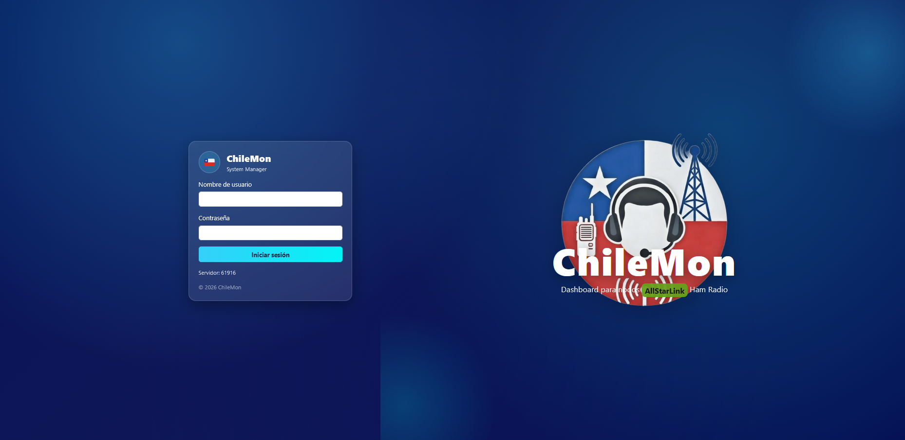
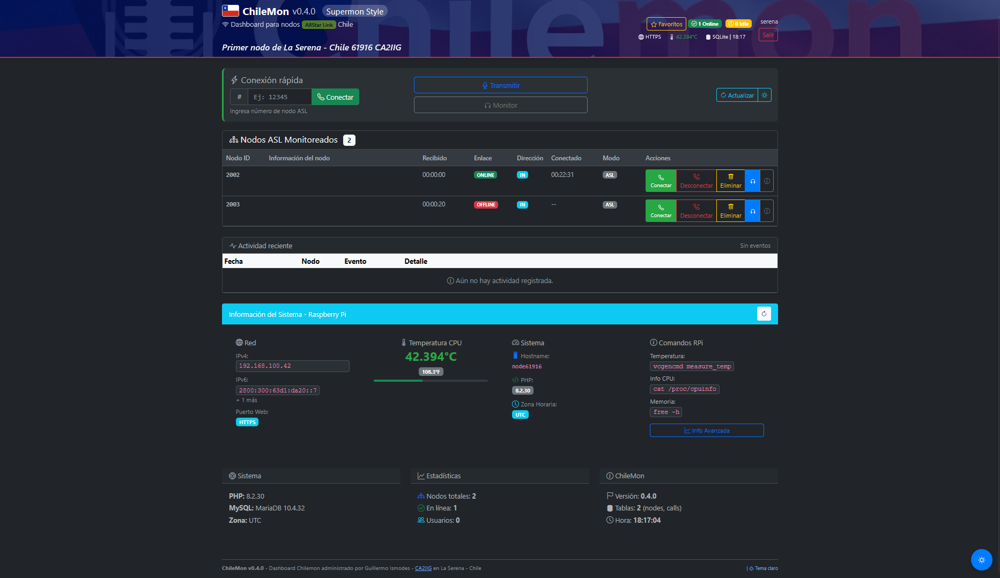
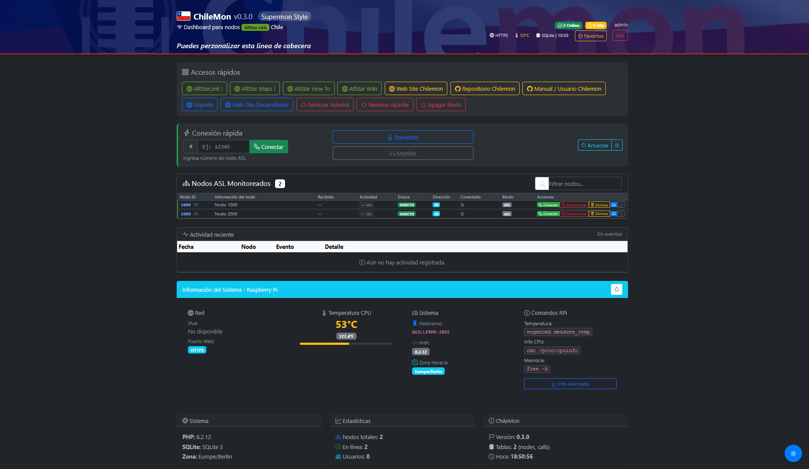
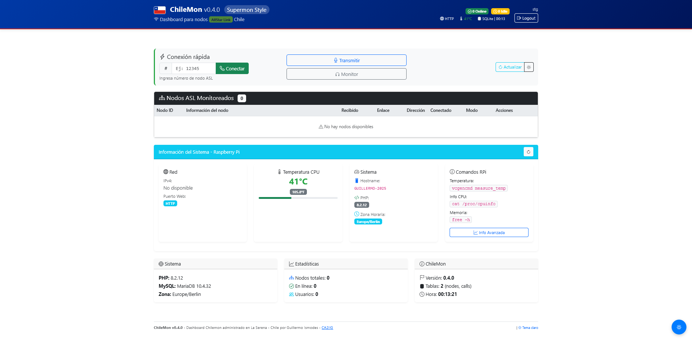
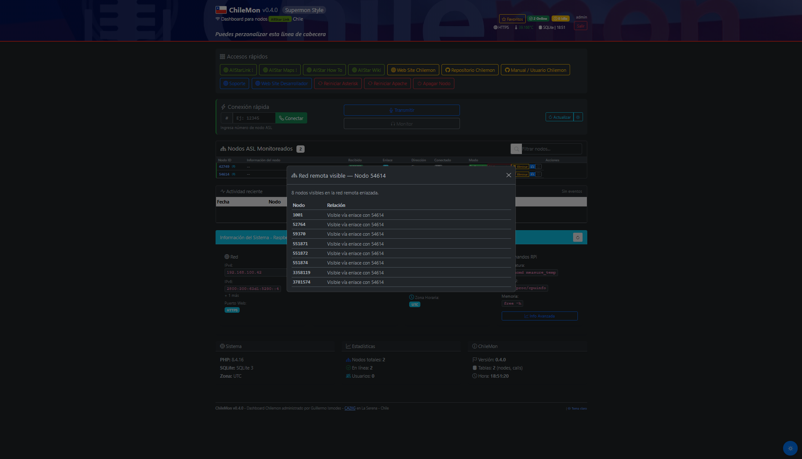
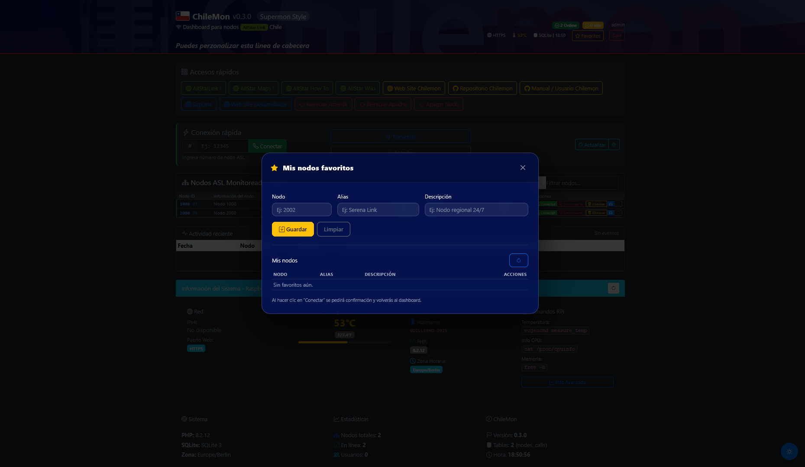

Features
ChileMon is no longer just an idea or a technical base: the current release delivers a first functional and usable version on real nodes.
Automatic Installer
Guided installation with validations, structure creation, wrapper setup, local configuration, and a final access summary.
Per-Node Configuration
Each installation generates its own config/local.php based on the real node environment.
Environment Auto-Detection
Detects node hostname and AMI parameters from the real ASL/Asterisk installation when available.
Login + Session
Controlled access, protected endpoints, and a secure foundation for dashboard administration.
Standard SQLite
No MySQL or MariaDB. Installation stays simple, portable, and easy to maintain on the node.
Secure Wrapper
Controlled use of Asterisk commands through chilemon-rpt and tightly scoped sudo rules.
ASL & EchoLink
Functional connection and disconnection from the dashboard for AllStarLink and EchoLink nodes (via prefix 8 or 3).
Per-User Favorites
Quick access to frequent nodes with alias and custom description per authenticated user.
Recent Activity
Basic event logging to support node operation and monitoring.
Security
ChileMon is built to grow on a secure, controlled, and predictable foundation inside an ASL3 node.
Authentication and Session
- CSRF protection in forms.
- Centralized session handling with consistent login/logout.
- Dynamic BASE_PATH / BASE_URL for sub-path deployments on real nodes.
- Protected endpoints under session/authorization control.
Secure Operation on the Node
- Secure wrapper for Asterisk rpt commands.
- Scoped sudoers for www-data.
- Non-versioned local configuration in config/local.php.
- SQLite / PDO validation before application initialization.
Screenshots






Installation
ChileMon is installed on the node and publishes its interface under /chilemon. The current installer detects hostname and AMI parameters from the real environment when possible.
Requirements and tested environments
- Tested systems: Raspberry Pi 3B+ with ASL3 and Proxmox virtual machine with Debian 13 + ASL3
- Apache + PHP 8.x
- PHP extensions: PDO, pdo_sqlite, and sqlite3
- Git installed on the node
Recommended workflow
Architecture
Current Components
- UI: public/views/*
- Auth: login/logout + session + CSRF
- API: public/api/*
- DB: SQLite in data/chilemon.sqlite
- Schema: install/sql/schema.sql
- Config: config/app.php + config/local.php
- Installer: install/install_chilemon.sh
- Initialization: bin/install.php
- Asterisk Wrapper: /usr/local/bin/chilemon-rpt
Project Structure
Roadmap
v0.1.0 Functional Release
- Operational dashboard
- Login + session
- Standard SQLite
- Connect / Disconnect
- Favorites
- Recent activity
- Automatic installer
v0.3.0 Current Release
- Favorites Integration
- Custom aliases
- Quick table toggle
- One-Step Installer
- RX / TX indicators
- EchoLink Support
v0.4.x Expansion
- Extended statistics
- Activity charts
- User management UI
- Visual customization
v1.0 Stable Release
- Mature foundation
- Solid operation
- Repeatable installation
- More documentation
- Project ready for the community
Contribute
Contributors Welcome
ChileMon is a community project for radio amateurs and AllStarLink nodes. There is room to contribute in UI, PHP, Asterisk/ASL, documentation, testing, and installer improvements.
- Issues: report bugs or improvements with real-world context
- PRs: small, clear, reviewable changes
- Testing: validation on real ASL3 nodes
Contact
- GitHub: use the repo (Issues / Discussions)
- Email: ca2iig@qsl.net (CA2IIG)
FAQ
No. ChileMon was not created to displace long-standing tools in the AllStarLink ecosystem. It recognizes the operational value of projects such as Supermon and other systems that have supported the community for years.
ChileMon was born as an independent project, built from scratch, with its own architecture, a more organized installation flow, and a foundation designed to grow in stages.
Its goal is to provide a modern, maintainable, and secure alternative capable of coexisting with existing installations and evolving alongside ASL3.
Support ChileMon
ChileMon is an independent project developed for the amateur radio community and AllStarLink users. If this project is useful to you, you can support its development with a voluntary donation.
What do donations help with?
ChileMon is developed independently. Donations help sustain the project and allow it to continue improving.
- Continuous dashboard development
- Testing on real AllStarLink nodes
- Security and stability improvements
- Project documentation and website
- Maintenance and future evolution
Ways to support
You can also support the project by contributing code, reporting bugs, or testing ChileMon on real nodes.